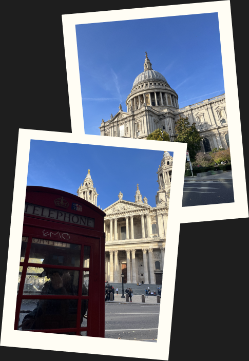
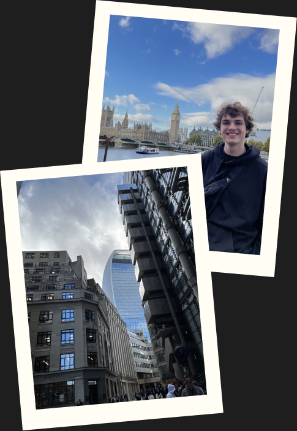

LONDON
London is one of those cities that never quite lets you go. Every visit feels like there is still more to discover, more streets to walk, more history to absorb.
Why This Trip Matters To Me
London was one of those trips that felt significant from the moment I arrived. The scale of the city, the mix of cultures and the sheer amount of things to see and do made it feel unlike anywhere else I had been before.
There is something about London that makes you feel both small and inspired at the same time. Walking through its streets, you get the sense that history and the present are constantly layered on top of each other.

Favourite Parts Of London
My favourite moments were the quieter ones — wandering through a park, stumbling across a market, or finding a little café down a side street. The big landmarks are impressive, but London really reveals itself when you slow down.
I also loved how easy it was to spend a full day just exploring on foot and still feel like you had only scratched the surface. That kind of depth is what makes a city truly memorable.
